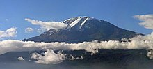

A mountain is an elevated portion of the Earth's crust, generally with steep sides that show significant exposed bedrock. A
mountain differs from a plateau in having a limited summit area, and is larger than a hill, typically rising at least 300 metres
(1000 feet) above the surrounding land.
A few mountains are isolated summits, but most occur in mountain ranges. Mountains are formed
through tectonic forces, erosion, or volcanism, which act on time scales of up to tens of millions of years. Once mountain building
ceases, mountains are slowly leveled through the action of weathering, through slumping and other forms of mass wasting, as well as
through erosion by rivers and glaciers.
High elevations on mountains produce colder climates than at sea level at similar latitude.
These colder climates strongly affect the ecosystems of mountains: different elevations have different plants and animals. Because of
the less hospitable terrain and climate, mountains tend to be used less for agriculture and more for resource extraction, such as mining
and logging, along with recreation, such as mountain climbing and skiing. The highest mountain on Earth is Mount Everest in the Himalayas
of Asia, whose summit is 8,850 m (29,035 ft) above mean sea level. The highest known mountain on any planet in the Solar System is Olympus
Mons on Mars at 21,171 m (69,459 ft). There is no universally accepted definition of a mountain. Elevation, volume, relief, steepness, spacing
and continuity have been used as criteria for defining a mountain. In the Oxford English Dictionary a mountain is defined as "a natural
elevation of the earth surface rising more or less abruptly from the surrounding level and attaining an altitude which, relatively to the
adjacent elevation, is impressive or notable."
Whether a landform is called a mountain may depend on local usage. Mount Scott outside Lawton,
Oklahoma, USA, is only 251 m (823 ft) from its base to its highest point. Whittow's Dictionary of Physical Geography states "Some authorities
regard eminences above 600 metres (1,969 ft) as mountains, those below being referred to as hills."